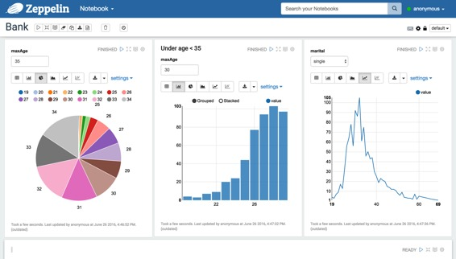
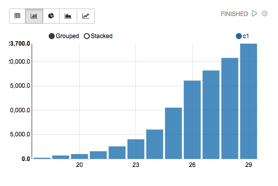
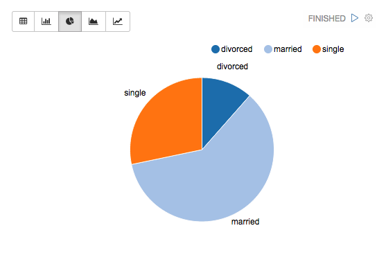
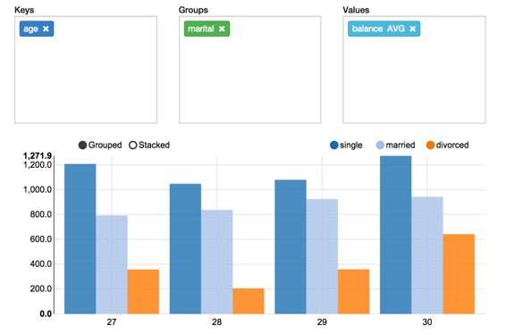
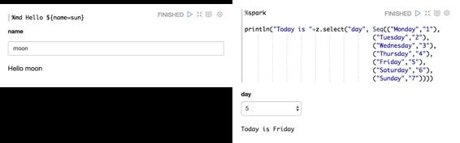
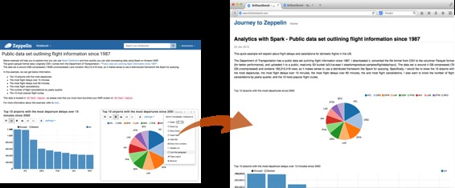

什么是Apache Zeppelin?
原文链接 : http://zeppelin.apache.org/docs/0.7.2/index.html
译文链接 : http://www.apache.wiki/pages/viewpage.action?pageId=10030475
多用途笔记本
笔记本是满足您所有需求的地方
数据摄入
数据发现
数据分析
数据可视化与协作

多语言后端
Apache Zeppelin解释器概念允许将任何语言/数据处理后端插入到Zeppelin中。目前，Apache Zeppelin支持许多解释器，如Apache Spark，Python，JDBC，Markdown和Shell。
添加新的语言后端是非常简单的。了解如何创建自己的解释器。
Apache Spark集成
特别是，Apache Zeppelin提供内置的Apache Spark集成。您不需要为其构建单独的模块，插件或库。
带有Spark集成的Apache Zeppelin提供
- 自动SparkContext和SQLContext注入
- 从本地文件系统或maven仓库运行jar依赖性加载。了解更多依赖装载机。
- 取消工作并显示其进度
有关Apache Zeppelin中Apache Spark的更多信息，请参阅Apache Zeppelin的Spark解释器。
数据可视化
Apache Zeppelin中已经包含了一些基本图表。可视化不限于Spark SQL查询，任何语言后端的任何输出都可以被识别和可视化。
|  |  |
|---|---|
数据透视图
Apache Zeppelin聚合值，并通过简单的拖放将其显示在透视图中。您可以轻松创建具有多个汇总值的图表，包括总和，数量，平均值，最小值，最大值。

详细了解Apache Zeppelin中的系统显示。
动态表单
Apache Zeppelin可以在笔记本中动态创建一些输入表单。

详细了解动态表单。
通过共享您的笔记本和段落进行协作
您的笔记本网址可以在协作者之间共享。然后，Apache Zeppelin将会实时播放任何更改，就像Google文档中的协作一样。

Apache Zeppelin提供了仅显示结果的URL，该页面不包括笔记本内的任何菜单和按钮。您可以轻松地将其作为iframe嵌入到您的网站内。如果您想了解更多有关此功能的信息，请访问此页面。
100％Opensource
Apache Zeppelin是Apache2许可软件，请查看源库和如何贡献。
Apache Zeppelin有一个非常活跃的开发社区。加入我们的邮件列表并报告Jira Issue跟踪器的问题。
下一步是什么？
快速开始
- 入门
- 快速入门安装Apache Zeppelin的基本说明
- Apache Zeppelin的配置列表
- 探索Apache Zeppelin UI：Apache Zeppelin的基本组件
- 教程：使用Apache Spark后端的简短漫步教程
- 基本功能指南
- 动态表单：创建动态表单的分步指南
- 将您的段落结果发布到您的外部网站
- 用您的笔记本电脑自定义Zeppelin主页
- 更多
- 升级Apache Zeppelin版本：升级Apache Zeppelin版本的手动过程
- 构建：从源代码构建
解释器
- 解释器在Apache Zeppelin：什么是解释器组？你如何在Apache Zeppelin中设置解释器？
- 用法
- 解释器安装：不仅安装社区管理口译员，还可以安装第三方口译员
- 当您将外部库包含在解释器依赖中时，可以进行解释器依赖管理
- 当您要作为最终用户运行解释器时，解释器的模拟用户
- 解释员执行Hook（实验）指定在执行前后段代码时由解释器执行的其他代码
- 可用的解释器：目前，Apache Zeppelin有大约20个解释器。
系统显示
- 基本系统显示：文本，HTML，表格可用
- Angular API：关于avilable后端和前端AngularJS API的说明
更多
- 笔记本存储：关于将笔记本电脑保存到外部存储器的指南
- REST API：Apache Zeppelin中的可用REST API列表
- 安全性：Apache Zeppelin中可用的安全支持
- 高级
- 有助于